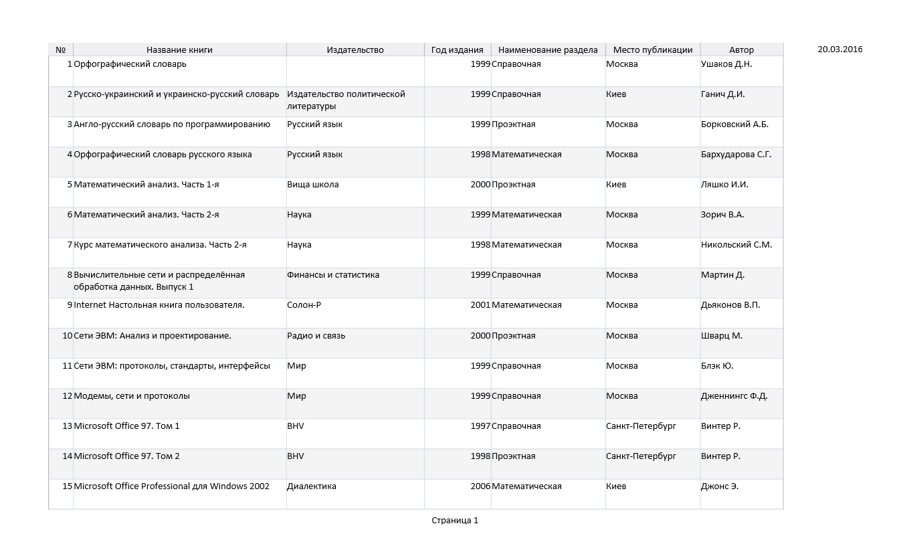
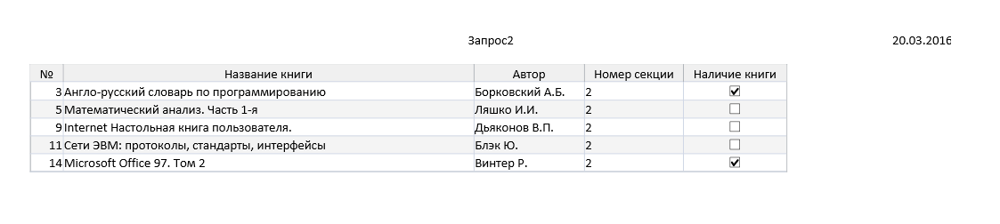
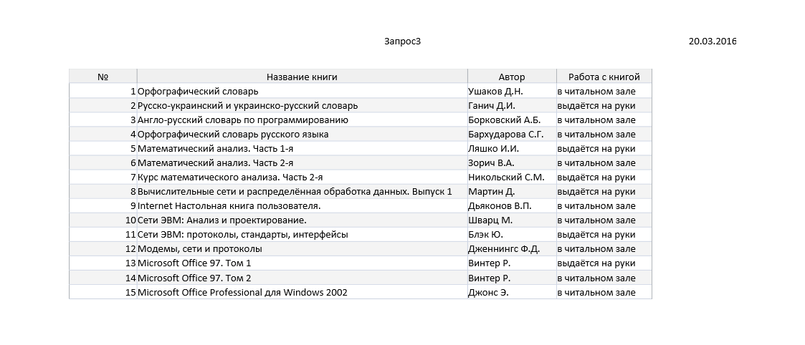
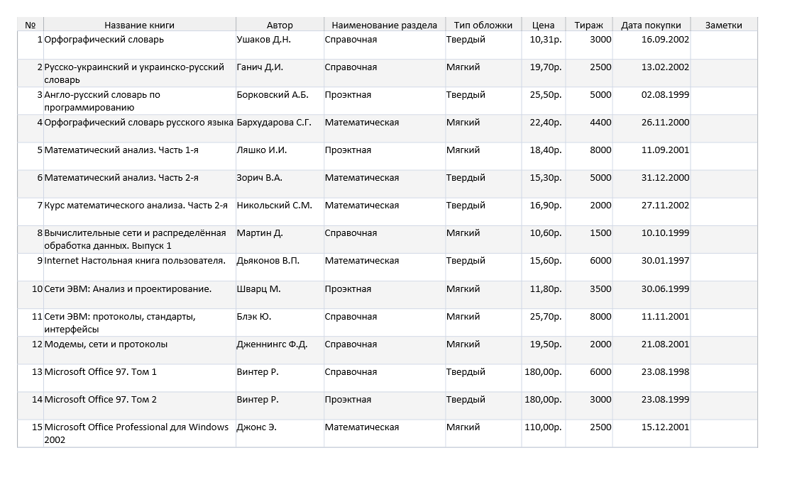
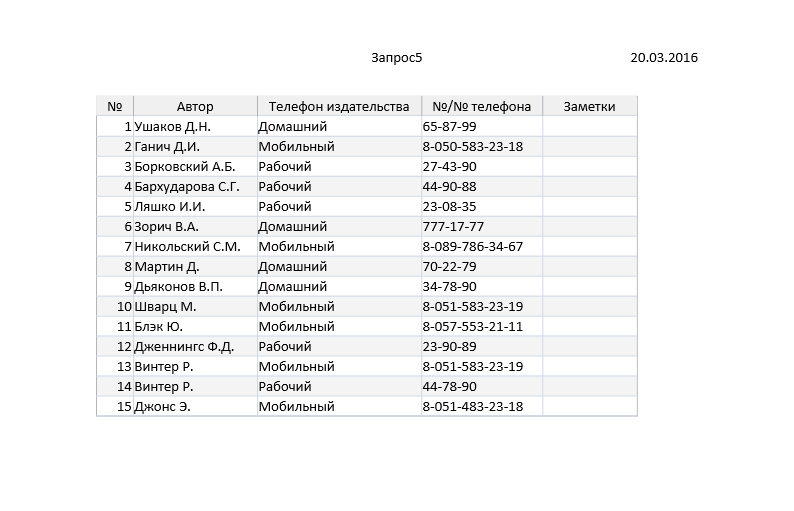
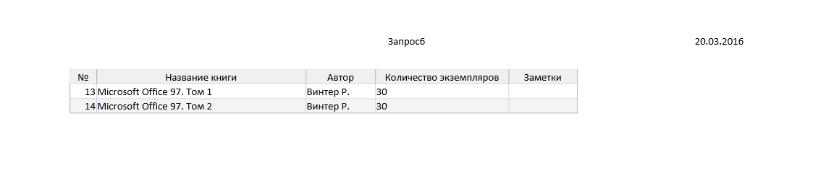

Практична робота №9
Тема: Використання даних у Microsoft Access. Створення запитів, форм, звітів, головної кнопочної
форми.
Мета роботи: навчитися створювати запити, форми та звіти у Microsoft Access 2007.
Хід роботи:
- Створити запити, форми, звіти.
- Створити «Главную кнопочную форму» яка має зовнішній вигляд і відповідає за відкриття бази даних
«Бібліотека», відкриття всіх форм: кнопка «Кол-во экземпляров книг» - форма 1, кнопка «Работа с книгой» -
форма 2, кнопка «№ секции книги» - форма 3, кнопка «Общие сведения о книгах» - форма 4, кнопка «Телефоны
издательств» - форма 5, закриття кнопочної форми кнопка «Выход».
Завдання:
- Створити запити(Создание\Мастер запросов\Простой запрос):
- Створити запит1 з полями: №, Назва книги, Видавництво, Рік видання, Найменування розділу, Місто публікації,
Автор.
- До запиту1 створити Діалогове вікно (Условие отбора) котре визначало, які книги в якому році видавались (
наприклад у 2008 році).
- Створити запит2 з полями: №, Назва книги, Автор, Номер секції, Наявність книги.
- До запиту2 створити Діалогове вікно (Условие отбора) котре визначало, які книги знаходяться у певній секції
(наприклад у 2секції).
- Створити запит3 з полями: №, Назва книги, Автор, Робота з книгою.
- Використовуючи Фільтр відобразити в запиті книги з якими працюють тільки в бібліотеці.
- Створити запит4 з полями: №, Назва книги, Автор, Найменування розділу, Тип обкладинки, Ціна, Тираж, Дата
покупки, Замітки.
- Створити запит5 з полями: №, Автор, Телефон видавництва, №/№ телефона, Замітки.
- Створити запит6 з полями: №, Назва книги, Автор, Кількість екземплярів, Замітки.
- Створити форми:
- Створити Форму1 до запиту 6 користуючись Майстром форм (Создание/Форма).
- У формі створити кнопку, яка б відповідала за закриття Форми1.
- Створити Форму2 до запиту3 користуючись Майстром форм.
- У формі створити кнопку, яка б відповідала за закриття Форми2.
- Створити Форму3 до запиту2 користуючись Майстром форм.
- У Формі створити кнопку яка б відповідала за відкриття Форми1.
- У формі створити кнопку, яка б відповідала за закриття Форми3.
- Створити Форму4 до запиту1 користуючись Конструктором Форм.
- У Формі створити кнопку яка б відповідала за відкриття Форми2.
- У формі створити кнопку, яка б відповідала за закриття Форми4.
- Створити Форму5 до запиту5 користуючись Конструктором Форм.
- У формі створити кнопку, яка б відповідала за закриття Форми5.
- Створити Звіти:
- Створити Звіт1, Звіт2, Звіт3, Звіт4 відносно до Форм 1, Форм 2, Форм3, Форм4 за допомогою Майстра Звітів.
- Створити Звіт5 за допомогою Конструктора Звітів до Форми5.
- Створити Кнопочну форму за допомогою Конструктора Форм, дати назву
"Бібліотека", де кнопки відповідають за відкриття усіх створених Форм та Звітів.





